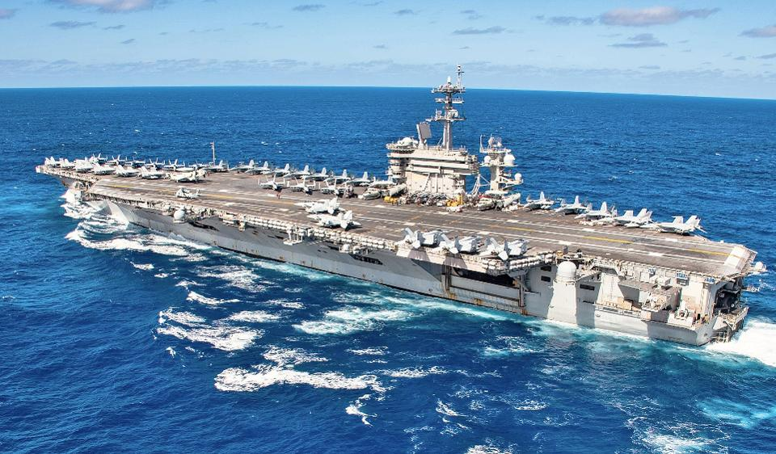
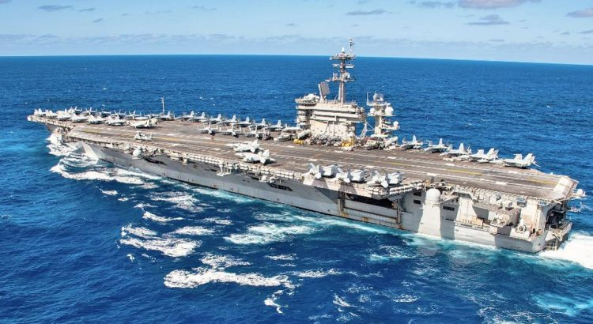

US Conducts Training Exercise Amid Rising Tensions

On Friday, two aircraft carriers— the USS Ronald Reagan and the USS Nimitz participated in a major military exercise in the waters of the South China Sea.The two aircraft carriers left for the region in early July.The exercise comes amid escalating tensions between the United States and China.
The news of the deployment of the two warships to the waters of the South China Sea had displeased Chinese leaders.The U.S. Navy has officially announced the participation of the two aircraft carriers in the exercise, saying that the purpose of this action was training.
'Nimitz and Reagan Carrier Strike Groups are operating in the South China Sea, wherever international law allows, to reinforce our commitment to a free and open Indo-Pacific, a rules-based international order, and to our allies and partners in the region,' Rear Admiral Jim Kirk, commander of the Nimitz, said in the statement.
More than 12,000 troops took part in the exercise on Friday.The exercise is being held at a point on the waters of the South China Sea, the ownership of which has sparked controversy between China, Vietnam, Malaysia, and the Philippines.
This move comes two days after U.S. Secretary of State Mike Pompeo declared that 'Beijing’s claims to offshore resources across most of the South China Sea are completely unlawful.'
America and China’s Territorial Claims
On Monday, the US government officially condemned China’s claim to ownership of the South China Sea.The region is of great economic importance to China and other countries in the region, in terms of underground resources.
China’s territorial claim to the South China Sea, in practical terms, means ignoring the arbitration of the International Court of Justice in The Hague.The court ruled in 2016 on the ownership of countries in the region.China claims ownership of the entire region.
U.S. military officials have said that their participation in the exercise in the waters of the South China Sea has nothing to do with the current political tensions between the two countries, including over Hong Kong.
However, several issues have caused tensions between the two countries.The news sources cite examples of disputes between the two countries in their report.
These include the enactment of the Hong Kong National Security Act, the Chinese government’s handling of and reporting on the outbreak of COVID-19, the issue of visas for journalists and students, as well as restrictions imposed by sanctions policies that have led to declining exports.
The trade war between the United States and China, as well as the ban on the use of products and technology of the Chinese company, Huawei, in creating 5G networks, are among the factors that have fueled tensions in the relations between the two countries.
[bsa_pro_ad_space id=4]
Share on Facebook Tweet Follow us
Posted On: 2020-07-18T00:00:00
Posted By: Joyce Davis




Content Date: 2020-07-18
Download Date: 2021-07-09
Document ID: L0C04EOVR